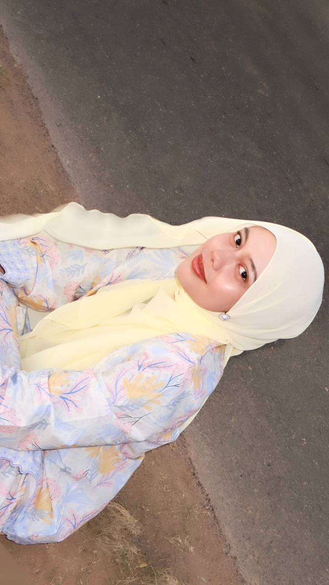
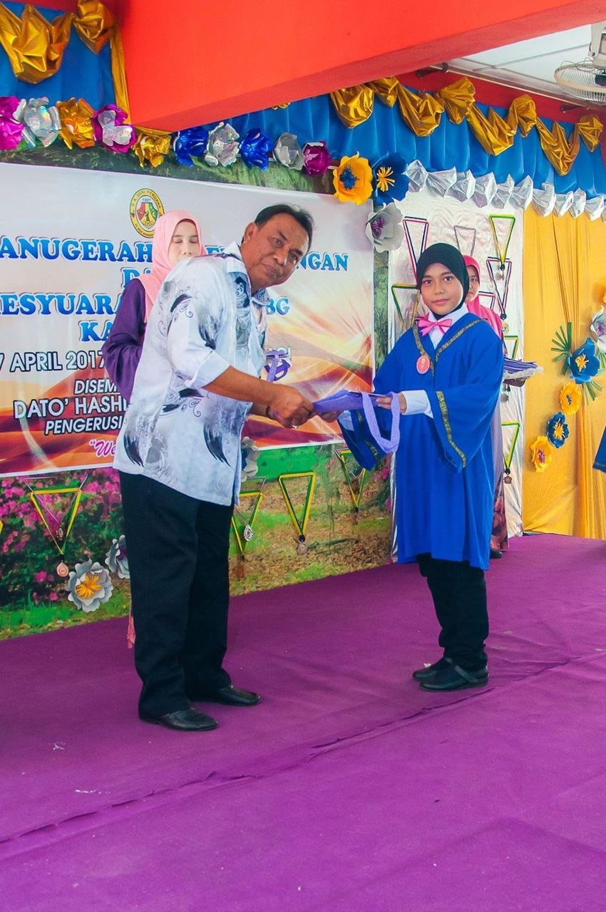
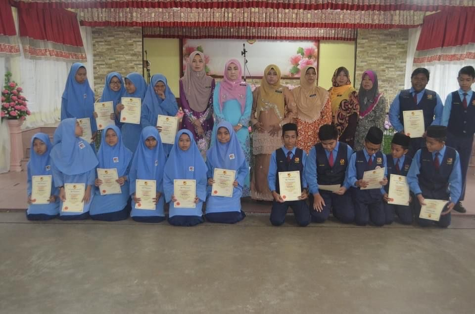
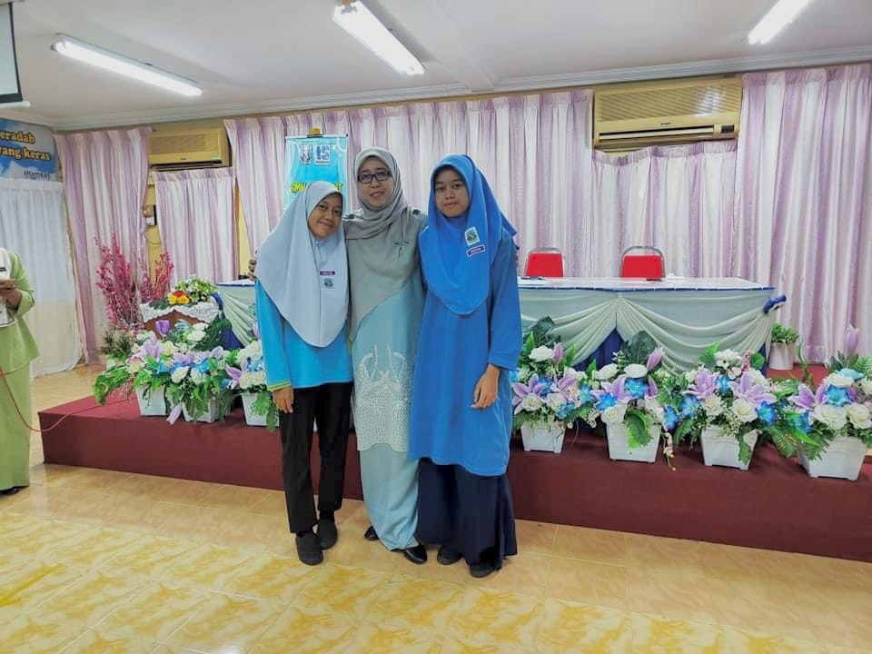

| Year | School | Place | Achievement |
|---|---|---|---|
| 2011 - 2012 | Tadika Kemas | Taman Wira | Completed |
| 2013 - 2017 | Sekolah Kebangsaan Seri Perdana (SKSP) | Alor Setar, Kedah | Completed |
| 2018 | Sekolah Kebangsaan Tunku Raudzah (SKTR) | Alor Setar Kedah | UPSR: 2A 4B |
| 2019 - 2024 | Sekolah Menengah Kebangsaan Convent (SMKC) | Alor Setar, Kedah | SPM: 4A 3B 2C |
| 2025 - 2027 | UiTM Kedah | Merbok | CGPA: 3.57 |
Click on each logo to explore the school background and its official song 🎶
Here are the schools that shaped my journey and helped me grow into who I am today 💗
“Education is the most powerful weapon which you can use to change the world.”
“Education must win”
“Priorities our study first”

The reason I transferred to Sekolah Kebangsaan Tunku Raudzah was because my mother started working there as an administrative assistant. This gave me the opportunity to continue my studies in a more comfortable and familiar environment. It was also a meaningful experience as I had to adapt to a new school, meet new friends, and become more confident in myself.

Figure 1: Excellent Achievement Award Day I received the Excellent Student Award in 2017 at Sekolah Kebangsaan Seri Perdana. I felt extremely happy and proud of my achievement because my dream of making my family and those around me proud had finally come true.

Figure 2: School Prefect Appointment Ceremony I was honoured to be appointed as a school prefect at Sekolah Kebangsaan Tunku Raudzah in 2018. This recognition was presented by the Senior Assistant of Student Affairs, Puan Norasyikin Binti Mohd Jafri, together with other teachers.

Figure 3: Beyond the Star During my time at Sekolah Menengah Kebangsaan Convent, I was ranked in the Top 30 and recognised as a “target student” in 2023 during Form 5. In this photo, I am with my classmates including my close friend Balqis, and our mentor teacher, Puan Azlina Binti Azizan.
Currently, I am pursuing my Diploma in Library Informatics at Universiti Teknologi MARA (UiTM) Kedah Branch. This journey has helped me grow not only academically but also personally. I have learned how to manage information effectively, improve my digital and technical skills, and become more confident in completing tasks independently. Throughout my studies, I have been exposed to various subjects related to information management, which has strengthened my interest in this field. I am continuously working hard to improve myself and achieve better results in the future.